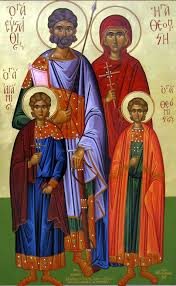

29th Day of Thoout 1737 (October 9th 2020)
The Commemoration of the Three Major Feasts of the Lord


 The church arranged a celebration on thw 29th of each Coptic month to commemorate the three major feasts of the Lord: The Annunciation, Nativity, and the Resurrection of Our Savior.
The church arranged a celebration on thw 29th of each Coptic month to commemorate the three major feasts of the Lord: The Annunciation, Nativity, and the Resurrection of Our Savior.
The rites of the service are in the joyful tunes with the readings as it is mentioned in the Katameros. An exception during the months of Tubah ad Amshir, the church does not celebrate the commemoration, for they represent the law and the prophets. They also come before the month of Baramhat when the Annunciation of the birth of the Lord Christ was fulfilled.
The blessing of these feasts be with us. Amen
The Martyrdom of St. Arbsima (Repsima) the Virgin, Agatha her Mother and Her Sisters the Virgins
On this day also, the holy virgins Arbsima (Repsima) and Agatha (Ghana) and their sisters, were martyred during the reign of Emperor Diocletian.
This infidel sought out the most beautiful damsel to marry. He sent artists to every country and ordered them to paint a portrait of the most beautiful damsel that their sights fell on and to give him an accurate description of her. When they arrived nearby Rome, they entered a convent for virgins and found Saint Arbsima and none was like her in beauty. They painted a portrait of her and sent it to the Emperor who rejoiced when he saw it. He sent to the kings and governors to invite them to the wedding celebrations.
When Arbsima and the virgins knew that, they wept, and left the convent fleeing, entreating the Lord Christ to help them and to keep their virginity. They fled to the country of Armenia, and entered the province over which Tridates was king. There they dwelt in a winery in a deserted garden. They had great trouble in getting their food, so one of them made glass, sold it, and with the money they bought their food.
When Diocletian sought for Arbsima, he did not find her. Later on, he heard that she was in the country of Armenia so he sent to Tridates the governor to look for her. When the virgins heard that, they left their shelter and hid themselves in the city. But someone informed about them. Tridates then commanded to bring Arbsima to him and when she refused, they abducted her and brought her to him.
God gave St. Arbsima power to overcome the governor; she pushed him forcefully and he fell on his back. She left him lying on the floor although he was well known by his might and bravery in war. Ashamed of having been vanquished by a virgin damsel, he ordered to cut off her head. The soldiers came and tied her, tore out her tongue, plucked out her eyes, and then cut her into pieces. When the governor rose up from his fall and regained his senses, he was sorry for killing the saint. He ordered to slay the rest of the virgins. The soldiers pierced the soles of their feet, flayed them, cut them into pieces, and then cast them out. One of them was sick and was lying on a bed, and she cried out to the soldiers so she might join her sisters. So, they cut off her head also and thus, all the virgins received the crown of martyrdom. The soldiers also slew all who had come with them from Rome.
After their departure, the governor became mad and the physicians could not help him until Saint Gregory, Bishop of Armenia, came to him and prayed over him. By this he was healed of his affliction and believed in the Lord Christ. He took the bodies of the holy and pure virgins and laid them in a holy place.
The blessing of her prayers be with us. Amen
The Martyrdom of Saint Febronia the Nun
 On this day, St. Febronia, the ascetic virgin, was martyred. This saint was the niece of the superior of a convent that had fifty virgins, in a place called "Ouryana" in Mesopotamia. Her aunt brought her up in the fear of God and taught her the reading of the Holy Books. St. Febronia vowed herself to the Lord Christ, and she fought the good fight by asceticism, fasting for two days at a time, and unceasing in her prayers.
On this day, St. Febronia, the ascetic virgin, was martyred. This saint was the niece of the superior of a convent that had fifty virgins, in a place called "Ouryana" in Mesopotamia. Her aunt brought her up in the fear of God and taught her the reading of the Holy Books. St. Febronia vowed herself to the Lord Christ, and she fought the good fight by asceticism, fasting for two days at a time, and unceasing in her prayers.
When Emperor Diocletian issued his edict to worship idols, many Christians were martyred by his hands. When the virgins heard that, they were afraid and left the convent and went into hiding. None was left in the convent except St. Febronia, another sister and the abbess.
On the following day, the envoys of the Emperor came, seized the abbess, and humiliated her. St. Febronia said to them, "Take me and set free this old woman." But they took her as well, bound in ropes, and brought them to the Governor. At that time she was twenty years old, and was attractive. The Governor asked her to worship the idols and promised her many things but she refused. He ordered that she be beaten with rods, and her dress to be torn off. The abbess cried out to him saying, "May God rip you up, O wild beast, for you want to put to shame this young orphan girl." The Governor was wrathful, and ordered St. Febronia to be squeezed by the wheel, and to comb her body with an iron comb until her flesh was completely torn. During all that, she prayed to the Lord asking for help. He then cut out her tongue and smashed her teeth so that she could not pray. But the Lord strengthened her and comforted her.
Finally, the Governor ordered her head cut off, and she received the crown of martyrdom. A righteous man took her body and shrouded it with costly shrouds, and placed it in a golden box.
The blessing of her prayers be with us, and Glory be to our God, forever. Amen.
28th Day of Thoout 1737 (October 8th 2020)
The Martyrdom of Saints Abadir (Apater) and Eraee (Herai), His Sister
On this day, Sts. Abadir (Apater) and Eraee (Herai), his sister, the children of Wasilides, the minister of Antioch, were martyred. Abadir was appointed Esfeh-selar (a high ranking governmental position) in his father's position. He had a room wherein he prayed and the Lord Christ appeared to him in the middle of the night and told him: "Rise up and take your sister Eraee, and go to Egypt to receive the crown of martyrdom and I will instruct a man whose name is Samuel to take care of your bodies and prepare them for burial." He bid him peace then went up into heaven. This vision was seen by his sister also, in which she was told, "Hearken to your brother and do not transgress his command." When she woke up, she trembled, and she went to her brother and told him about the vision, declaring that she would not disobey him. They vowed to each other to go and shed their blood in the Name of the Lord Christ.
When his mother knew that, she and her handmaidens rent their garments, and came to St. Abadir. His mother pleaded with him not to become a martyr. He promised her that he would not go forward to Diocletian seeking martyrdom. Her heart was soothed, not knowing his intention of going somewhere else to become a martyr.
Every night he used to change his apparel and go disguised to give water to the prisoners and minister to them all night, and he asked the door-keeper not to tell anyone.
Later on, he saw a vision to remind him of travelling. He took his sister and went to Alexandria, then they came to Cairo. They met St. Abekragon who recognized them and blessed them. From there they came to Tomwah where they entered the church and prayed in it. Then, they went to El-Ashmunin where they met with Samuel the deacon. The following day Samuel went with them to Ansena, and they confessed our Lord Christ before Arianus the governor, who tortured them severely. Meanwhile, Saint Abadir prayed and entreated God to strengthen his faith and the faith of his sister Eraee. The Lord took their souls and carried them up to the heavenly Jerusalem and they saw the eminent ranks and the luminous habitations of the righteous; then he brought them back to their bodies.
The governor wrote their decree and then adjured Abadir by his God to tell him his name and who he was. The saint replied, "Swear to me that you shall not change what you have decreed," and when the governor swore to him, he said, "I am Abadir El-Esfeh-selar." The governor cried out, saying, "Woe to me, 0 my Lord why did you not let me know that you are my Lord and let me go so far as to condemn you to all these severe tortures?" The saint replied, "Fear not, for you are about to receive the crown of martyrdom. The emperor will seek me and will not find me, and he will hear that you have killed me. Then he will call you, torture you and you will die in the Name of our Lord Christ. And now hasten to finish us." Straightaway the governor ordered that their heads be cut off. The believers wrapped up their bodies in fine apparels and Samuel the deacon took them to his house until the days of persecution were ended and a great church was built for them.
Their prayers be with us, and Glory be to our God, forever. Amen.
27th Day of Thoout 1737 (October 7th 2020)
The Martyrdom of St. Eustathius, his Two Sons and his Wife

On this day, St. Eustathius and his two sons were martyred. He was one of the ministers of the Roman Empire. Early in his life, he did not know God, but he used to give alms and charity in abundance, and the Lord did not wish that his toil should be in vain. While he was in the desert hunting wild animals, a figure of a cross, appeared to him between the horns of a stag, and it reached up to heaven. He chased the stag in the mountains to hunt it. The Lord spoke to him and told him about his new name which is Eustathius, for he was called, Ephlokidus, before. The Lord ordered him to be baptized in the Name of the Lord Christ and told him that poverty should come upon him speedily.
When he heard that, he descended from the mountain and went to the bishop of the city who baptized him, his wife and his sons, and he changed his name to Eustathius as the Lord had ordered him. Right after that, he lost all what he had from slaves, handmaidens, cattle and money. Then he took his wife and his sons, and went forth from the city of Rome and embarked on a ship. And as he could not pay the fare, they took his wife instead. He took his two sons and came to a river. He crossed over to the other side with one of them and returned to get the other, but he did not find him because a lion had taken him. He went back to get the first but he did not find him either because a wolf had snatched him. He felt deep sorrow because of the loss of his wife and his two sons.
St. Eustathius worked, for a period of time, as a guard in a garden until the Emperor of Rome died and another reigned instead who sent messengers to search for that saint. One of the messengers happened to enter the garden which the saint guarded. The two men recognized each other and St. Eustathius was taken back to the Emperor. The Emperor honored him and reinstated him to his former position.
It happened in that time that a war broke out and they recruited two men from every city to the army. The two sons of the saint were saved by the Divine Will from the lion and the wolf and were brought up in the same city. They remained for a long time not knowing each other. Then the Divine Will arranged that both would be recruited from that city. One day while they were walking, they reached a garden and sat there talking together, and they discovered that they were brothers.
As for their mother, the owner of the ship who had kept her in payment of the fare was a barbarian, but God protected her from him. He kept her in a garden which by the Divine Will was the same garden, where her two sons had gathered in, and she was close by her sons while they were talking and she recognized them. The two sons were assigned to guard the treasury of their father who did not recognize them.
When the Lord willed to gather this blessed family together, the wife entered the place where her husband was, and they recognized each other and rejoiced for reuniting unexpectedly. Then she told him that she had met their sons in the garden. While she was telling him so, the two sons joined them and she cried joyfully, "There are our two sons!" They embraced each other in tears of joy, and they praised God who fulfilled what he had promised and they lived in joy and peace. Later on, the Emperor died and another reigned who worshipped idols. He summoned St. Eustathius and his wife and his sons. He ordered them to worship the idols but they refused. So he ordered his men to torture them with fire, but they were not harmed. Then he commanded to cast them into a brazen cauldron and set fire under it. Thus they delivered their souls into the hands of the Lord, and received the crowns of martyrdom from our Lord and Savior Jesus Christ.
Their prayers be with us, and Glory be to our God, forever. Amen.